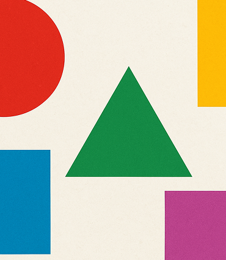
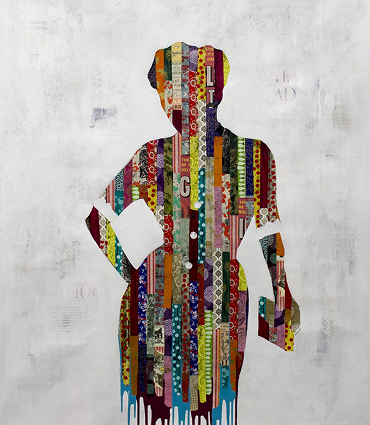

Hoe ziet de ideale werkruimte eruit om creatief te zijn?

Hoe beïnvloeden kleuren en vormen emoties en gedachten?
Hoe beïnvloeden kleuren, vormen en stijl gevoelens van vrouwen?
Hoe maken moderne ontwerpers hun werk duurzaam en eerlijk?

Hoe combineren ontwerpers kunst, wetenschap en cultuur?
Leidt genderbewust ontwerp tot inclusievere digitale producten?